Kremser equation
크렘저 식은 흡수탑과 탈거탑에서 흡수를 할 때, 탑 단이 얼마만큼 필요한지를 계산하는 식이다. multistage countercurrent absorber 또는 stripper의 계산을 단순화하는 group method로서, 각 단의 온도,조성,유량을 세세하게 다 풀지 않고, 전체 단 묶음의 효과를 한 번에 계산하는 편리한 방법이라고 볼 수 있다.
크렘저 식이 쓰이는 상황은 다음과 같다.
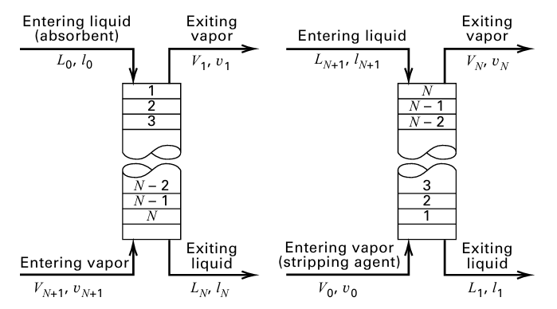
각각 흡수와 탈거 상황이며 이 그림은 그릴 수 있어야 한다. 이때 필요한 탑의 단수를 계산할 수 있다. 정확히는 N단 흡수탑에서
흡수인자 A가 주어졌을 때 들어온 solute 중 몇 %가 흡수되지 않고 나가는가? 를 계산할 수 있다.
이때 보통 한 성분을 먼저 기준으로 잡는다. 만약 다성분이면 성분마다 따로 식을 세워야 한다.
이때 기호는
V = vapor total molar flow rate
L = liquid total molar flow rate
y = vapor phase에서 해당 성분의 molar flow
l = liquid phase에서 해당 성분의 molar flow
여기서 교재의 y, l은 단순한 mole fraction이 아니라 그 성분의 molar flow로 쓰인다. 절대 분율이 아니라는 것에 주의하여라.
1)흡수 상황
먼저 순수 흡수제, 즉 들어오는 액체에 solute가 없다고 먼저 가정한다. (l=0)
이때 흡수인자와 크렘저 식은 다음과 같다.
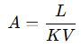 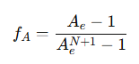
fA=들어온 기체 solute 중 흡수되지 않고 나가는 비율
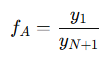
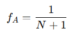
예시로 한번 크렘저 식의 사용을 알아보자.
EX) 기체 100 kmol/h에 solute가 10 mol%, 흡수제 L = 200 kmol/h,K = 0.5, 단수 N = 3
출구 기체 속 solute는? 흡수율은?
A)
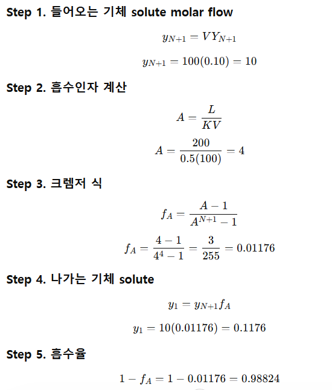
즉 0.01176만큼은 흡수가 안된다. 따라서 들어오는 성분 10에 이를 곱해서 흡수 안되고 나가는 solute를 구할 수 있으며 흡수율도 구할 수 있다.
2)탈거 상황
탈거인 경우 크렘저 식은 형태는 비슷하나 인자가 다르다.
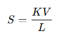 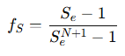
3) 흡수제에 solute가 일부 포함된 경우
위에서 가정한 흡수 식들은 흡수제가 깨끗하다고 가정했을 때의 경우이다. 즉 (l=0)하지만 실제 공정에서는 흡수제를 재생해서 다시 쓴다. 이때 재생이 완벽하지 않으면 흡수제 안에 solute가 조금 남아 있다. (l0=!0)
출구 기체 속 solute는 두 군데에서 온다.
1. 원래 아래에서 들어온 기체 solute 중 흡수되지 않고 남은 것
2. 위에서 들어온 흡수제 안 solute가 기체로 다시 strip된 것
교재의 일반 흡수식은 다음과 같다
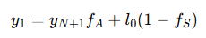
이때 크렘저 식은 똑같다. 다만 이를 어떻게 쓰냐에 달려있다고 보면 된다.
예제를 통해 알아보자.
문제 형태: 기체 feed에 solute가 있음. 흡수제에도 solute가 일부 들어 있음. N, L, V, K가 주어짐.
출구 기체 solute flow를 구하라.
Step 1. 기체로 들어오는 solute molar flow
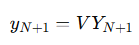
Step 2. 액체 흡수제로 들어오는 solute molar flow
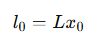
Step 3. 흡수인자 & Step 4. 탈거인자
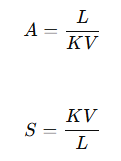
Step 5. fA, fS 계산
Step 6. 출구 기체 solute 계산
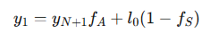
Step 7. 출구 액체 solute 계산
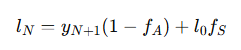
실제 예제: N = 3
V = 100 kmol/h
L = 200 kmol/h
K = 1
들어오는 기체 solute mole fraction = 0.10
들어오는 흡수제 solute mole fraction = 0.01
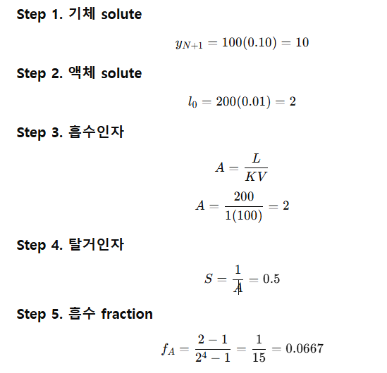
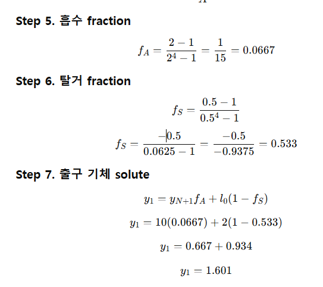
탈거탑에서 들어오는 기체에 solute가 있는 경우:
stripper에 대해서도 일반식이 있다/
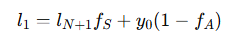
multicomponent에서는 어떻게 하냐??
기체에 C1, C2, C3, nC4, nC5 ...등 여러 성분이 있는 경우 각 성분마다 K가 다르기 때문에 각 성분마다 흡수인자가 다르다. 따라서 다음을 각각 계산한다.
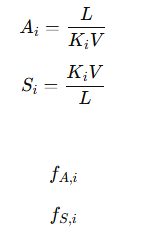
따라서 최종적으로 외울 공식은 다음과 같다.
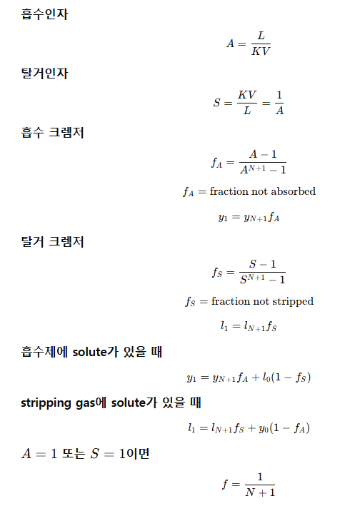